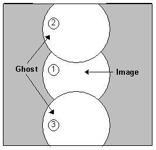

Operating Documentation
Direction 5133315-3, Rev# 14
Signa EXCITE HD 1.5T Service Methods
Module Version 1.0, Version Date 5/3/07
Operating Documentation |
| Required Persons | Preliminary Reqs | Procedure | Finalization |
|---|---|---|---|
| 1 |
B0 Image is used to quantify EPI image quality and calibrations. Eight scans are taken that collect 24 total images. The ghost-to-image ratios are calculated to measure the IQ outcome of the new b0 dither interpolation method.
| NOTE: | All EPI calibration procedure commands are case-sensitive. Failure to type the commands as shown in this procedure will cause the scripts to fail. |
| ||||
| POISON HAZARD! | ||||
| THE PHANTOM CONTAINS NICKEL, A SUSPECT CARCINOGEN. | ||||
| DO NOT INGEST. DISPOSE OF AS A HAZARDOUS WASTE ACCORDING TO STATE AND FEDERAL REGULATIONS. |
| NOTE: | Possible equipment damage. Completely remove the quad head coil from the cradle. Failure to do so will damage the head coil T/R network. |
Completely remove the Quad Head Coil from the cradle.
Locate one of the 100mm spherical phantoms (if necessary, remove one of the spheres from the phased array TLT phantom) and place it in the EPI foam positioner. See Illustration 1.
Illustration 1: EPI PHANTOM POSITIONING - BODY COIL

Landmark this phantom in the body coil using a Grafidy baseplate and the EPI foam positioner. See Step . The foam positioner places the phantom at isocenter in all three axes. Press <LANDMARK> and <Advance TO SCAN> buttons.
At the operator work space, prepare the system for a Body B0 Dither scan using the Service Protocols procedure located on the service methods CD-ROM.
[Auto Prescan]
Right click on [Research Options] and select [User CVs]. Verify the CV pw_gxwl2 = 0 (for the first scan only).
Make a reference scan by pressing [Reference Scan].
Press [Scan]. The system scans and creates a total of 3 images, (one for each plane). A total of 8 scan (24 images) will be taken. Prior to each scan the CV pw_gxwl2 must be changed based on Table 5-1. After changing the CV, make a reference scan by pressing [Reference Scan].
Table 1:
| pw_gxwl2 [uS] | EchoSpeed esp [uS] | HighSpeed esp [uS] | Base exp [uS] |
| 0 | 768 | 1600 | 3200 |
| 96 | 960 | 1792 | 3392 |
| 192 | 1152 | 1948 | 3548 |
| 288 | 1344 | 2176 | 3766 |
| 384 | 1536 | 2368 | 3968 |
| 480 | 1728 | 2560 | 4160 |
| 576 | 1920 | 2752 | 4352 |
| 672 | 2112 | 2944 | 4544 |
Make a measurement of the ghosting levels. Take three ROI measurements at the locations shown in Illustration 5-1. Measure and record the ghost mean as shown. Measure the image mean as shown.
Illustration 2: GHOSTING MEASUREMENTS

Using circular ROI at approximate location shown - left of center of image (or right of center of image, whichever shows more ghosting). However, avoid ghosting created by bubbles in the phantom.
Take 3 ROI measurements as shown
Calculate as follows:
[Mean(2) divided by Mean(1)] x 100
[Mean(3) divided by Mean(1)] x 100
| NOTE: | Levels of ghosting must be < 5%. |
Verify the following specifications for each of the 24 images:
(Ghost Mean / Image Mean) x 100 < 5%
Put the system back into a patient scanning mode by closing windows opened during the procedure and putting away any phantoms.
Verify system operations by doing a check scan.